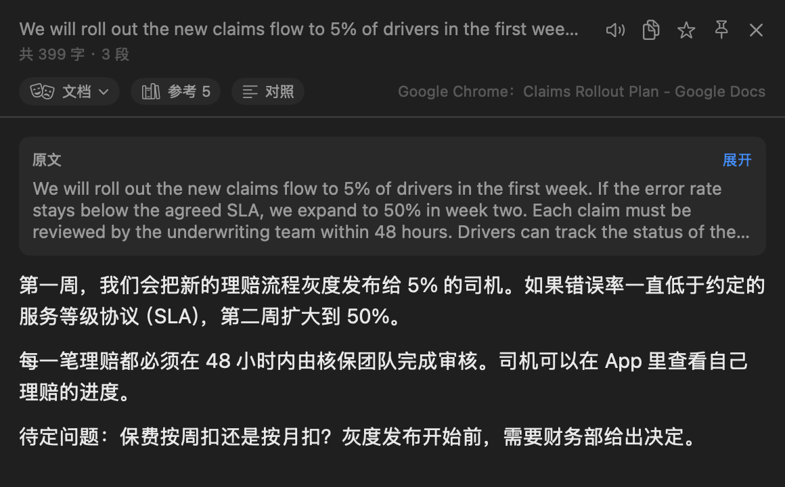
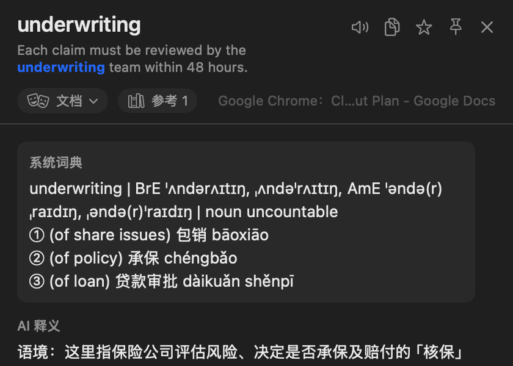

看文档时，
划一下就懂。
翻译神器是一个轻量的 macOS 菜单栏翻译工具。划词、截图、输入都能翻译；按文档、技术、学术、聊天等场景用不同的译法，还能参考你自己的资料和术语表。翻译由你选择的大模型完成。


翻译神器是一个轻量的 macOS 菜单栏翻译工具。划词、截图、输入都能翻译；按文档、技术、学术、聊天等场景用不同的译法，还能参考你自己的资料和术语表。翻译由你选择的大模型完成。


常驻菜单栏，不打断阅读。单词给音标、释义和例句，句子和段落直接给通顺的译文，选中中文自动翻成英文。
在任意 App 里选中文字，鼠标旁出现小图标，点一下就翻译；也可以按 ⌥D。Chrome、VS Code、Google 文档也能取词。
按 ⌥S 框选屏幕区域，本机识别文字再翻译；打开「看图翻译」后表格、公式、手写体效果更好。
按 ⌥A 弹出输入框，像 Spotlight 一样打字回车就翻译。
划词时同时读取所在的原句，先告诉你这个词在这句话里的具体意思。查单词时系统词典的释义即时出现。
整段、多段文字自动用大浮窗，原文可以折叠，译完能逐段对照；浮窗会避开选中的文字，不挡住原文。
一键收藏单词和当时的原句、来源；同一个词查到第二次会提醒你，方便发现该记的生词。
同一句话在方案文档、代码评审和 Slack 聊天里应该有不同的译法。翻译神器按当前 App、窗口标题和网址自动选场景，浮窗左上角可以随时切换，或记住「以后这个网站都用这个场景」。每个场景的要求都能改，也能新建自己的场景。
把项目文档、产品说明、以前的译文加进资料库，翻译时会在本机检索出最相关的几段作参考，专有名词和说法就会跟你的资料一致。
# 术语表示例
claim = 理赔
premium = 保费
underwriting = 核保
canary = 灰度发布
SLA = 服务等级协议下载、解压、拖进「应用程序」，双击打开。
下载 Fanyi.zip，双击解压，把 Fanyi.app 拖进「应用程序」文件夹。
App 已经过苹果公证，双击就能打开。它常驻在屏幕右上角的菜单栏，图标是一个对话气泡。
第一次运行会打开设置。选一个翻译服务并填 API Key；装了 Claude Code 的话可以直接用 claude -p，不用 Key。
划词需要「辅助功能」权限，截图翻译需要「屏幕录制」权限。设置窗口的「权限」一栏有跳转按钮。
brew install xcodegen，克隆仓库后运行 ./build.sh install。每个服务的 Key、地址、模型分开保存，API Key 存在系统钥匙串里。
| 服务 | 说明 |
|---|---|
| Claude API | 默认 claude-opus-5-5，想更快更省可以换 haiku |
| AWS Bedrock | 通过 Bedrock 使用 Claude |
| OpenAI API | Chat Completions，默认 gpt-5-mini |
| DeepSeek | 默认 deepseek-chat |
| 通义千问 | 阿里云百炼，默认 qwen-plus |
| 自定义 | 任何 OpenAI 兼容服务：Kimi、智谱、OpenRouter、本机 Ollama…… |
| claude -p | 调用本机 Claude Code，用你的 Claude 账号额度 |
生词本、查词历史、资料库都只保存在本机。要翻译的文字、划词时读取到的原句，以及从资料库检索出的相关片段和命中的术语，会发送给你选择的翻译服务；不会发给其他任何地方。